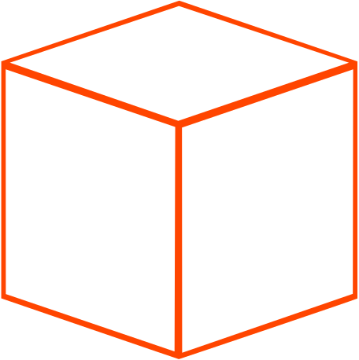

<div class="header">
  <h1>BoxIK</h1>
  
  <h1>@box-ik/ng-codes</h1>
</div>

<div class="codes">
  
  <!-- list of available codes-->
  <div class="item">
    <h2>Codes Available</h2>
    <ul>
      <li *ngFor="let code of ngCodesService.list()">
        <b>{{ code.description }}</b> ({{ code.value | uppercase }})
      </li>
    </ul>
  </div>

  <!-- list of activated codes -->
  <div class="item">
    <h2>Activated</h2>
    <ul>
      <li *ngFor="let code of activated">
        {{ code.description }}
      </li>
      <span>NONE</span>
    </ul>
  </div>
</div>

<div class="keys">
  <span>Keys Pressed: </span> <p>{{ keys | uppercase }}</p> <button (click)="onClear()">clear</button>
</div>

<div class="toolbar">
  <div class="status">
    <span>Status: </span>
    <p *ngIf="!ngCodesService.paused && !focused">listening</p>
    <p *ngIf="ngCodesService.paused">paused by User</p>
    <p *ngIf="!ngCodesService.paused && !!focused">paused while {{ focused }} active</p>
  </div>

  <div class="settings">
    <h3>Settings:</h3>
    <ul>
      <li>
        <input id="paused" type="checkbox" [(ngModel)]="ngCodesService.paused" (focus)="onFocus($event)" (blur)="onBlur()">
        <label for="paused">pause</label>
      </li>
      <li>
        <input id="time" type="number" [(ngModel)]="ngCodesService.resetInterval" (focus)="onFocus($event)" (blur)="onBlur()">
        <label for="time">reset input interval (ms)</label>
      </li>
    </ul>
  </div>

  <h3>ignore input while Input or TextArea active</h3>
  <div class="input">
    <span>Input</span>
    <input type="text" (focus)="onFocus($event)" (blur)="onBlur()">
  </div>
  <div class="input">
    <span>TextArea</span>
    <textarea (focus)="onFocus($event)" (blur)="onBlur()" cols="10" rows="2"></textarea>
  </div>
</div>


<router-outlet></router-outlet>
